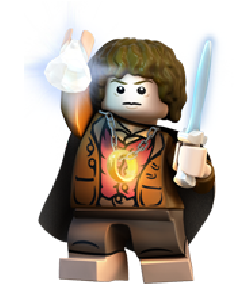
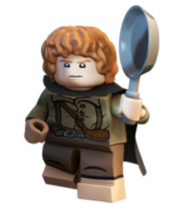
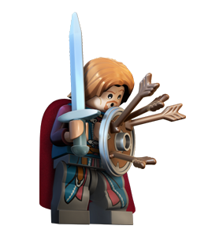
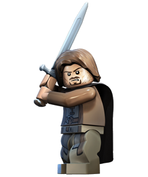
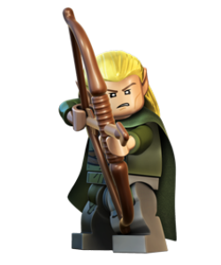
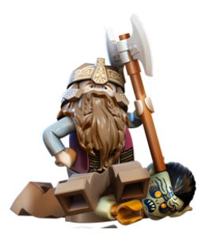
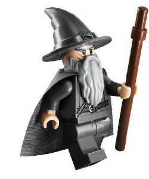
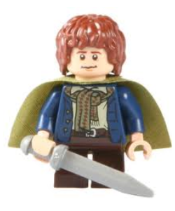
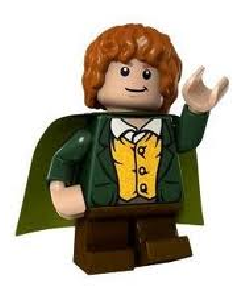

Frodo
Baggins
Hobbit
Start quest
A small and quiet Hobbit from Bag End, Frodo is entrusted to bring the One Ring to Mount Doom and destroy it forever.
In spite of his noble spirit, he starts to feel the terrible powers of the One Ring and the danger of the fearsome
creatures who hunt him. With the help of his friends in the Fellowship,
Frodo must bravely carry this heavy burden to save Middle-earth.

Samwise
"Sam" Gamgee
Hobbit
View Story
Sam is Frodo’s gardener who loves poetry and his frying pan. With a brave heart and high spirits,
he is chosen by Gandalf to accompany Frodo on his quest. Sam makes a promise not to lose his best friend,
but evil powers will test his loyalty to Frodo.

Boromir
Son of Denethor
Human
More Info
Boromir is the strong and honorable commander of Gondor’s army. He is also next in line to serve as steward of Gondor
as the true heir to the throne has not returned. Dedicated to defending his people, he is tempted to take the One Ring
from Frodo and wield its powers to protect Gondor.

Aragorn
Son of Arathorn
Human
Start quest
Known merely as a Ranger of the North, Aragorn is actually a descendant of ancient kings and heir to the throne of
Gondor. Masterful with the sword, this great warrior leads the Fellowship of the Ring when Gandalf the Grey was
defeated by the Balrog. In joining Frodo in his quest, Aragorn also comes closer to his fate

Legolas
Son of Thranduil of Mirkwood
Elf
More Info
An Elven Prince, Legolas joined the Fellowship as a representative of his people. His agility and skill in archery is
unmatched. Because of the old feud between Elves and Dwarves, Legolas and Gimli are often found
trying to outdo each other.

Gimli
Son of Glóin
Dwarf
More Info
As a representative of the Dwarves, Gimli is a mighty warrior always ready to draw his broad axes in battle.
He is proud and strong. Gimli is not particularly good at riding horses and dislikes being tossed
around—except when absolutely necessary.

Gandalf
The Grey, The White, Olórin, Mithrandir
Wizard
More Info
A warm and wise Wizard, Gandalf is the leader of the Fellowship of the Ring and dedicated to defeating Sauron.
Initially known as Gandalf the Grey, he delights his Hobbit friends with fireworks when he visits The Shire.
He returns after an epic duel with a Balrog to become a more powerful Wizard known as Gandalf the White.

Peregrin
"Pippin" Took
Hobbit
More Info
Frodo’s friend and cousin from Bag End. Pippin was the youngest of the four hobbits.

Merriadoc
"Merry" Brandybuck
Hobbit
More Info
> Frodo’s friend and cousin from Bag End. Merry was considered as the most perceptive and intelligent of the Hobbits.